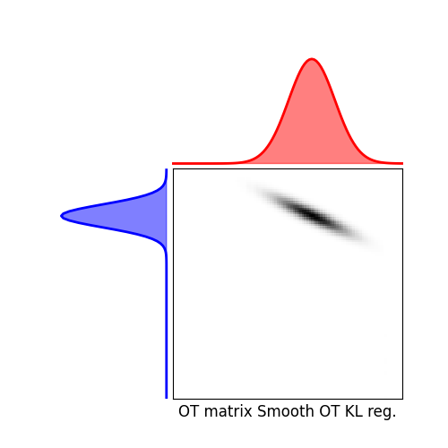

Note
Click here to download the full example code
1D smooth optimal transport¶
This example illustrates the computation of EMD, Sinkhorn and smooth OT plans and their visualization.
# Author: Remi Flamary <remi.flamary@unice.fr>
#
# License: MIT License
# sphinx_gallery_thumbnail_number = 6
import numpy as np
import matplotlib.pylab as pl
import ot
import ot.plot
from ot.datasets import make_1D_gauss as gauss
Generate data¶
Plot distributions and loss matrix¶
Out:
<matplotlib.legend.Legend object at 0x7ff831d527d0>
pl.figure(2, figsize=(5, 5))
ot.plot.plot1D_mat(a, b, M, 'Cost matrix M')
Solve EMD¶
Solve Sinkhorn¶
Out:
It. |Err
-------------------
0|2.821142e-01|
10|7.695268e-02|
20|1.112774e-02|
30|1.571553e-03|
40|2.218100e-04|
50|3.130527e-05|
60|4.418267e-06|
70|6.235716e-07|
80|8.800770e-08|
90|1.242095e-08|
100|1.753030e-09|
110|2.474136e-10|
/home/circleci/project/examples/plot_OT_1D_smooth.py:86: UserWarning: Matplotlib is currently using agg, which is a non-GUI backend, so cannot show the figure.
pl.show()
Solve Smooth OT¶
Out:
/home/circleci/project/examples/plot_OT_1D_smooth.py:101: UserWarning: Matplotlib is currently using agg, which is a non-GUI backend, so cannot show the figure.
pl.show()
Out:
/home/circleci/project/examples/plot_OT_1D_smooth.py:112: UserWarning: Matplotlib is currently using agg, which is a non-GUI backend, so cannot show the figure.
pl.show()
Total running time of the script: ( 0 minutes 0.873 seconds)